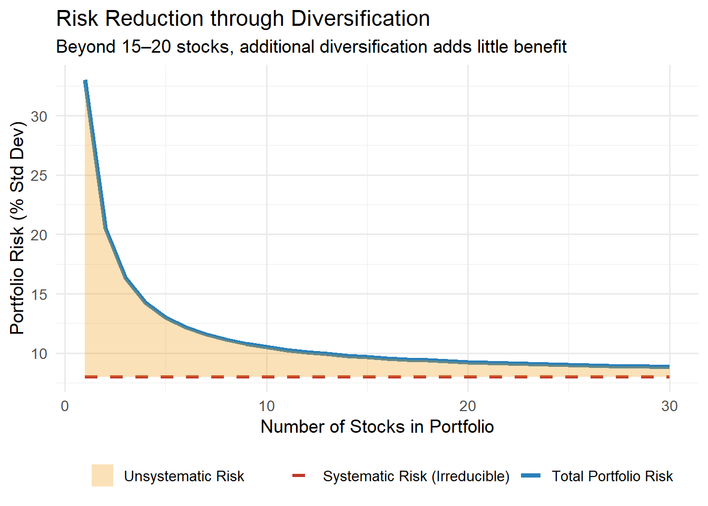
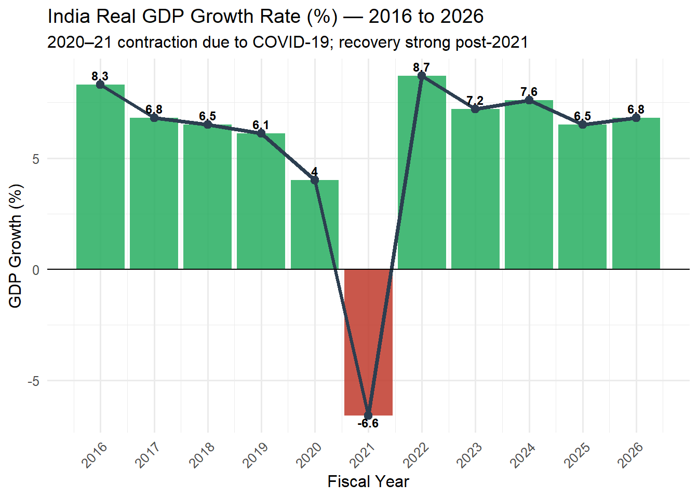

Chapter 3 Fundamental Analysis
Learning Objectives
After completing this unit, students will be able to:
- Differentiate between systematic and unsystematic risk, and measure both
- Perform top-down economic analysis using macroeconomic indicators relevant to India
- Conduct industry analysis using Porter’s Five Forces and the industry life cycle model
- Evaluate companies through business model analysis and governance assessment
- Calculate and interpret key investor ratios including EPS, P/E, PEG, ROE, ROCE, and Debt-Equity Ratio
- Apply fundamental analysis to real Indian companies listed on NSE and BSE
3.1 Risk and Return — Foundations
3.1.1 The Risk-Return Relationship
The most fundamental principle in finance is the positive relationship between risk and expected return. Rational investors demand higher compensation for accepting greater uncertainty. This is captured formally in:
\[E(R_i) = R_f + \beta_i [E(R_m) - R_f]\]
Where: - \(E(R_i)\) = Expected return on security i - \(R_f\) = Risk-free rate (India: 91-day T-bill rate ≈ 6.8%) - \(\beta_i\) = Beta of security (systematic risk measure) - \(E(R_m)\) = Expected market return (Nifty 50 historical CAGR ≈ 12%) - \([E(R_m) - R_f]\) = Market risk premium (≈ 5–6% in India)
3.1.2 Measuring Return
A. Holding Period Return (HPR): \[HPR = \frac{(P_1 - P_0) + D}{P_0} \times 100\]
B. Annualised Return (CAGR): \[CAGR = \left(\frac{P_n}{P_0}\right)^{1/n} - 1\]
C. Arithmetic Mean Return: \[\bar{R} = \frac{R_1 + R_2 + \cdots + R_n}{n}\]
Example 3.1: Infosys stock data for 2019–2023:
years <- 2019:2023
prices <- c(715, 950, 1750, 1480, 1415) # Approximate Dec closing prices
dividends <- c(32, 27, 30, 34, 36) # Annual dividends ₹
returns <- numeric(length(prices) - 1)
for (i in 2:length(prices)) {
returns[i-1] <- ((prices[i] - prices[i-1]) + dividends[i-1]) / prices[i-1] * 100
}
cat("Annual Returns (Infosys):\n")## Annual Returns (Infosys):## 2020 : 37.34 %
## 2021 : 87.05 %
## 2022 : -13.71 %
## 2023 : -2.09 %##
## Mean Annual Return: 27.15 %## Std Deviation (Risk): 45.52 %## CAGR: 18.61 % p.a.3.1.3 Types of Risk
Investment risk is classically divided into two components:
\[\text{Total Risk} = \text{Systematic Risk} + \text{Unsystematic Risk}\]
A. Systematic Risk (Market Risk)
Systematic risk affects all securities in the market and cannot be diversified away. It arises from macroeconomic forces that impact the entire economy.
Sources of Systematic Risk: 1. Interest Rate Risk — RBI repo rate changes affect all bond and stock valuations 2. Inflation Risk — Rising CPI erodes real returns from fixed-income instruments 3. Market Risk — Broad market crashes (2008, 2020 COVID crash) 4. Political Risk — Government policy changes, elections, geopolitical events 5. Exchange Rate Risk — INR/USD movements affect IT companies, importers, exporters 6. Reinvestment Risk — Risk that coupons are reinvested at lower rates
Measurement: Beta (β) \[\beta_i = \frac{Cov(R_i, R_m)}{Var(R_m)} = \frac{\sigma_{im}}{\sigma_m^2}\]
| Beta Value | Interpretation | Example (Indian Stocks) |
|---|---|---|
| β = 0 | No market risk | Government T-Bills |
| 0 < β < 1 | Less volatile than market | ITC, HUL, TCS |
| β = 1 | Moves with market | Nifty 50 ETF |
| β > 1 | More volatile than market | Adani Enterprises, Zomato |
| β < 0 | Moves opposite to market | Gold (negative correlation) |
B. Unsystematic Risk (Company/Industry-Specific Risk)
Unsystematic risk affects only specific companies or industries and can be eliminated through diversification.
Sources: 1. Business Risk — Operational issues, product failure, management changes 2. Financial Risk — High leverage, liquidity crisis (IL&FS default, 2018) 3. Regulatory Risk — SEBI investigations, TRAI rulings, environmental penalties 4. Competitive Risk — Market share loss to competitors (Jio disrupting telecom) 5. Technology Risk — Obsolescence of products/services
# Simulate risk reduction through diversification
n_stocks <- 1:30
total_risk <- 25 / n_stocks + 8 # Systematic = 8%, unsystematic decreasing
systematic_risk <- rep(8, 30)
plot_risk <- data.frame(
Stocks = n_stocks,
Total_Risk = total_risk,
Systematic = systematic_risk
)
ggplot(plot_risk, aes(x = Stocks)) +
geom_line(aes(y = Total_Risk, color = "Total Portfolio Risk"), size = 1.5) +
geom_line(aes(y = Systematic, color = "Systematic Risk (Irreducible)"),
linetype = "dashed", size = 1.2) +
geom_ribbon(aes(ymin = Systematic, ymax = Total_Risk, fill = "Unsystematic Risk"),
alpha = 0.3) +
scale_color_manual(values = c("Total Portfolio Risk" = "#2980b9",
"Systematic Risk (Irreducible)" = "#c0392b")) +
scale_fill_manual(values = c("Unsystematic Risk" = "#f39c12")) +
labs(title = "Risk Reduction through Diversification",
subtitle = "Beyond 15–20 stocks, additional diversification adds little benefit",
x = "Number of Stocks in Portfolio", y = "Portfolio Risk (% Std Dev)",
color = "", fill = "") +
theme_minimal(base_size = 13) +
theme(legend.position = "bottom")
Figure 3.1: Figure 3.1: Diversification and Risk Reduction
Figure 3.1: Diversification and Risk Reduction
3.2 Fundamental Analysis — Framework
Fundamental analysis involves evaluating a security’s intrinsic value by examining the underlying economic, industry, and company-level factors. The objective is to identify undervalued or overvalued securities in the market.
Top-Down Approach:
Figure 3.2: Top-Down Fundamental Analysis Framework
3.3 Economic Analysis
3.3.1 Key Macroeconomic Indicators for Indian Investors
A. Gross Domestic Product (GDP)
GDP growth signals corporate earnings expansion. India’s GDP growth trend:

Figure 3.2: Figure 3.3: India GDP Growth Rate (2016–2026)
Source: Compiled from RBI, SEBI, NSE, BSE, AMFI and Government Reports (Latest Available Data).
B. Inflation (CPI)
Rising inflation reduces real returns and forces RBI to raise repo rates, compressing equity valuations.
C. Repo Rate
The Reserve Bank of India’s repo rate is the benchmark interest rate. It directly affects: - Cost of corporate borrowing → earnings - Bond yields → risk-free rate in CAPM - Real estate demand → mortgage rates - Currency value → import/export competitiveness
| Year | Repo Rate (%) | CPI Inflation (%) |
|---|---|---|
| 2016 | 6.50 | 4.9 |
| 2017 | 6.00 | 3.3 |
| 2018 | 6.25 | 3.9 |
| 2019 | 6.50 | 4.8 |
| 2020 | 5.15 | 6.2 |
| 2021 | 4.00 | 5.1 |
| 2022 | 4.00 | 6.7 |
| 2023 | 6.25 | 5.5 |
| 2024 | 6.50 | 5.4 |
| 2025 | 6.25 | 4.9 |
| 2026 | 5.75 | 4.5 |
Source: Compiled from RBI, SEBI, NSE, BSE, AMFI and Government Reports (Latest Available Data).
D. Fiscal Deficit
India’s fiscal deficit target (Union Budget 2024–25): 5.1% of GDP. High fiscal deficits crowd out private investment and can trigger inflation — both negative for equity markets.
E. Foreign Exchange Reserves and INR
India’s forex reserves reached $650 billion+ (2024), providing currency stability. A depreciating INR benefits IT/pharma exporters (Infosys, TCS, Sun Pharma) but hurts importers (oil companies, airlines).
3.4 Industry Analysis
3.4.1 3.4.1 Porter’s Five Forces Model
Michael Porter’s Five Forces framework is the gold standard for industry attractiveness analysis:
Figure 3.4: Porter’s Five Forces Model
Application to Indian IT Industry (TCS / Infosys):
| Force | Assessment | Impact |
|---|---|---|
| Competitive Rivalry | High (TCS, Infosys, Wipro, HCL, Accenture) | Moderate — large contracts mitigate |
| Supplier Power | Low (large talent pool, though wage inflation rising) | Positive |
| Buyer Power | Moderate (large MNCs have leverage; but switching costs exist) | Moderate |
| New Entrants | Low (high capital + talent barriers) | Positive |
| Substitutes | Rising (AI/automation threatens repetitive IT work) | Negative long-term |
Overall: Attractive industry with strong entry barriers
3.4.2 Industry Life Cycle
Every industry passes through four stages:
| Stage | Characteristics | Investment Strategy |
|---|---|---|
| Introduction | High losses, heavy R&D, few players | High risk; potential for multi-bagger |
| Growth | Rapid revenue growth, improving margins, rising competition | Best time to invest |
| Maturity | Stable growth, established players, dividend payers | Value + income strategy |
| Decline | Revenue falling, exit of players, margin compression | Avoid or exit |
Indian Industry Examples by Stage (2024):
| Stage | Industry | Examples |
|---|---|---|
| Introduction | Green Hydrogen, Space Tech | NTPC Green Hydrogen, ISRO spinoffs |
| Growth | Electric Vehicles, Data Centres | Tata Motors EV, Adani Data Centres |
| Maturity | FMCG, Private Banking | HUL, Nestle India, HDFC Bank |
| Decline | Legacy Telecom (Wireline), Print Media | Declining sector |
Source: Compiled from RBI, SEBI, NSE, BSE, AMFI and Government Reports (Latest Available Data).
3.5 Company Analysis
3.5.1 Business Model Analysis
A company’s business model defines how it creates, delivers, and captures value. Key elements:
- Revenue Model — How does the company earn? (SaaS subscription, toll, retail, B2B)
- Cost Structure — Fixed vs. variable costs; operating leverage
- Value Proposition — Why do customers choose this company?
- Competitive Moat (Moat) — Warren Buffett’s concept of sustainable competitive advantage
Moat Analysis — Indian Companies:
| Company | Type of Moat | Evidence |
|---|---|---|
| Asian Paints | Brand + Distribution network | 55,000+ dealer network; 60% market share |
| HDFC Bank | Low-cost deposit franchise + technology | CASA ratio 40%+; GNPA < 1.5% |
| TCS | Scale + intellectual capital + client stickiness | 95%+ client retention; $29B revenue |
| Avenue Supermarts (D-Mart) | EDLC (Every Day Low Cost) model | Owned stores → no rental risk |
| Bajaj Finance | Risk analytics + cross-sell platform | 85M+ customers; 30%+ ROE |
3.5.2 Corporate Governance Assessment
SEBI’s LODR (Listing Obligations and Disclosure Requirements) Regulations, 2015 mandate governance standards for listed Indian companies. Investors should assess:
- Board composition — Independent directors ≥ 1/3 of board
- Audit committee — Majority independent directors
- Related party transactions — Scrutinise for tunnelling
- Promoter pledging — High pledging = governance red flag
- Remuneration — CEO pay vs. performance alignment
Red Flag: Promoter Pledge Ratio
When promoters pledge their shares to borrow money, stock price declines can trigger margin calls, forcing sell-off. This cascaded into the Adani group sell-off in early 2023 (triggered by Hindenburg Research report alleging governance concerns).
3.6 Financial Analysis and Key Ratios
3.6.2 Price-to-Earnings Ratio (P/E)
\[\boxed{P/E = \frac{\text{Market Price per Share}}{EPS}}\]
Interpretation: - High P/E: Market expects high future growth OR stock may be overvalued - Low P/E: May signal undervaluation OR poor growth prospects
| Company | Sector | EPS (₹ TTM) | CMP (₹) | P/E Ratio |
|---|---|---|---|---|
| Asian Paints | FMCG | 47 | 2840 | 60.4 |
| TCS | IT | 114 | 4200 | 36.8 |
| Infosys | IT | 63 | 1720 | 27.3 |
| HDFC Bank | Banking | 84 | 1640 | 19.5 |
| Reliance Industries | Conglomerate | 101 | 3050 | 30.2 |
| Bajaj Finance | NBFC | 94 | 7180 | 76.4 |
| Avenue Supermarts | Retail | 47 | 5400 | 114.9 |
| ITC | FMCG | 20 | 475 | 23.8 |
| SBI | Banking | 67 | 825 | 12.3 |
| ICICI Bank | Banking | 47 | 1195 | 25.4 |
Source: Compiled from RBI, SEBI, NSE, BSE, AMFI and Government Reports (Latest Available Data).
3.6.3 PEG Ratio (Price/Earnings to Growth)
The PEG ratio adjusts P/E for expected growth, making comparisons across high-growth and value stocks more meaningful.
\[\boxed{PEG = \frac{P/E \text{ Ratio}}{\text{Earnings Growth Rate (\%)}}}\]
Interpretation: - PEG < 1: Potentially undervalued relative to growth - PEG = 1: Fairly priced - PEG > 1: Potentially overvalued
Example: If Bajaj Finance has P/E of 35 and earnings growth of 25%, then: \[PEG = \frac{35}{25} = 1.4 \text{ (slightly overvalued for growth)}\]
3.6.4 Return on Equity (ROE)
\[\boxed{ROE = \frac{\text{Net Profit After Tax}}{\text{Shareholders' Equity}} \times 100}\]
ROE measures how efficiently a company generates profit from shareholders’ money. ROE > 15% is generally considered good for Indian companies.
DuPont Analysis of ROE: \[ROE = \underbrace{\frac{PAT}{Sales}}_{\text{Net Margin}} \times \underbrace{\frac{Sales}{Assets}}_{\text{Asset Turnover}} \times \underbrace{\frac{Assets}{Equity}}_{\text{Leverage}}\]
companies <- c("HDFC Bank", "TCS", "Asian Paints", "Bajaj Finance", "ITC")
net_margin <- c(0.23, 0.19, 0.15, 0.25, 0.28)
asset_turnover <- c(0.08, 1.12, 1.10, 0.12, 0.68)
leverage <- c(9.5, 1.6, 1.4, 6.5, 1.35)
roe <- net_margin * asset_turnover * leverage * 100
roe_df <- data.frame(
Company = companies,
Net_Margin = paste0(round(net_margin*100, 1), "%"),
Asset_Turnover = round(asset_turnover, 2),
Leverage = round(leverage, 1),
ROE = paste0(round(roe, 1), "%")
)
kable(roe_df,
caption = "Table 3.3: DuPont ROE Analysis — Select Indian Companies (2024)",
col.names = c("Company", "Net Profit Margin", "Asset Turnover", "Leverage", "ROE"),
booktabs = TRUE) %>%
kable_styling(bootstrap_options = c("striped", "hover"), full_width = TRUE) %>%
row_spec(0, bold = TRUE, color = "white", background = "#2c3e50")| Company | Net Profit Margin | Asset Turnover | Leverage | ROE |
|---|---|---|---|---|
| HDFC Bank | 23% | 0.08 | 9.5 | 17.5% |
| TCS | 19% | 1.12 | 1.6 | 34% |
| Asian Paints | 15% | 1.10 | 1.4 | 23.1% |
| Bajaj Finance | 25% | 0.12 | 6.5 | 19.5% |
| ITC | 28% | 0.68 | 1.4 | 25.7% |
Source: Compiled from RBI, SEBI, NSE, BSE, AMFI and Government Reports (Latest Available Data).
3.6.5 Return on Capital Employed (ROCE)
\[\boxed{ROCE = \frac{EBIT}{\text{Capital Employed}} \times 100}\]
\[\text{Capital Employed} = \text{Total Assets} - \text{Current Liabilities}\]
ROCE measures return on total capital (debt + equity), making it superior to ROE for comparing capital-intensive companies. Target: ROCE > Weighted Average Cost of Capital (WACC)
3.6.6 Dividend Yield
\[\boxed{\text{Dividend Yield} = \frac{\text{Annual Dividend per Share}}{\text{Market Price per Share}} \times 100}\]
High dividend yield stocks (2024): ITC (3.5%), Coal India (7–8%), ONGC (5–6%), Power Grid (5%)
3.6.7 Debt-to-Equity Ratio
\[\boxed{\text{D/E Ratio} = \frac{\text{Total Debt (Long Term + Short Term)}}{\text{Shareholders' Equity}}}\]
A high D/E ratio indicates financial leverage risk: - Acceptable for mature companies with stable cash flows (utilities, banks) - Risky for cyclical companies in downturns
| Company | D/E Ratio | Interpretation |
|---|---|---|
| Tata Steel | 0.85 | Moderate (Steel industry norm) |
| L&T | 1.20 | High but manageable (long-term contracts) |
| Reliance Industries | 0.38 | Reduced significantly (asset sales) |
| TCS | 0.00 | Zero debt — cash-rich |
| Infosys | 0.00 | Zero debt — cash-rich |
| HUL | 0.01 | Near-zero (FMCG asset-light) |
| Asian Paints | 0.02 | Near-zero (premium brand) |
| HDFC Bank | 9.80 | High but natural for banking |
| SBI | 12.50 | Very high but sovereign-backed |
| Coal India | 0.01 | Zero debt (PSU) |
Source: Compiled from RBI, SEBI, NSE, BSE, AMFI and Government Reports (Latest Available Data).
3.6.9 Comprehensive Ratio Analysis — Reliance Industries (2023–24)
Example 3.2: Analyse Reliance Industries Limited using key investor ratios.
# Reliance Industries FY2024 Data (approximate)
ril_data <- list(
PAT = 70806, # ₹ Crore
Revenue = 997690, # ₹ Crore
EBIT = 107504, # ₹ Crore
Total_Assets = 1743890,
Current_Liabilities = 432050,
Total_Equity = 660789,
Long_Term_Debt = 380000,
Short_Term_Debt = 85000,
EPS_Diluted = 104.73,
DPS = 10, # Dividend per share
Shares = 678.45, # Crore
CMP = 3050 # Approximate CMP
)
# Calculations
eps <- ril_data$EPS_Diluted
pe <- ril_data$CMP / eps
roe <- ril_data$PAT / ril_data$Total_Equity * 100
roce <- ril_data$EBIT / (ril_data$Total_Assets - ril_data$Current_Liabilities) * 100
de <- (ril_data$Long_Term_Debt + ril_data$Short_Term_Debt) / ril_data$Total_Equity
div_yield <- ril_data$DPS / ril_data$CMP * 100
bvps <- ril_data$Total_Equity / ril_data$Shares * 100 # ₹ per share (Equity in Cr, shares in Cr)
pb <- ril_data$CMP / bvps
cat("=== Reliance Industries Key Ratios (FY2024) ===\n")## === Reliance Industries Key Ratios (FY2024) ===## EPS (Diluted): ₹ 104.73## P/E Ratio: 29.1 x## ROE: 10.72 %## ROCE: 8.19 %## Debt/Equity: 0.7 x## Dividend Yield: 0.33 %## Book Value/Share: ₹ 97396.86## P/B Ratio: 0.03 xCase Study 3.1: Infosys — Fundamental Analysis
Company Background: Infosys Limited (NSE: INFY) is India’s second-largest IT services company with revenue of $18.5 billion (FY2024) and operations in 50+ countries. Founded in 1981 by N.R. Narayana Murthy and six co-founders with ₹10,000 initial capital.
Economic Context: IT sector benefits from INR depreciation, global digital transformation spending, and India’s engineering talent pool. FY2024 saw headwinds from US and European recession fears causing client spending cuts.
Industry Analysis: - Porter’s Threat of New Entrants: LOW (talent + capital barriers) - AI disruption risk: MEDIUM-HIGH (generative AI replacing lower-level coding) - Market opportunity: $500B+ global IT services market
Fundamental Metrics (FY2024): - Revenue: $18.5B (+1.4% YoY — slowdown) - Operating Margin: 20.7% - EPS: ₹63 (Diluted) - ROE: 31.5% - Dividend yield: ~3.5% - Net cash: $4.2B (zero debt, cash-rich)
Valuation: At CMP ₹1,720 and EPS ₹63, P/E is 27x — premium to PSU peers but reasonable for quality IT franchise. Strong governance, zero debt, and dividend growth history make it suitable for conservative long-term investors.
Investment Verdict: ACCUMULATE on dips; target 12-month P/E of 28–30x → ₹1,800–1,900
Research Corner 3.1: AI-Augmented Fundamental Analysis
Traditional fundamental analysis is time-intensive. Modern AI tools are transforming the process:
- ChatGPT / Claude — Summarise annual reports, identify risks in MD&A sections, compare ratios across peers
- Screener.in — Free platform for 10-year financial data, automatic ratio calculation for all NSE/BSE companies
- Tickertape — AI-powered stock screener and portfolio analysis
- StockEdge — Club-based research + fundamental screening for Indian stocks
- Bloomberg AI — Institutional-grade fundamental and sentiment analysis
Research Finding: Studies by Gu, Kelly & Xiu (2020) in the Review of Financial Studies demonstrated that machine learning-based stock selection significantly outperforms traditional factor models. The application of these methods to Indian markets (particularly Nifty 500) is an active research area.
3.7 Summary
Total risk = Systematic + Unsystematic risk. Beta measures systematic risk; diversification eliminates unsystematic risk.
Top-down fundamental analysis proceeds: Economic → Industry → Company → Financial.
Economic analysis focuses on GDP growth, CPI inflation, RBI repo rate, fiscal deficit, and INR trends — all critical for Indian equity investors.
Porter’s Five Forces identifies industry attractiveness; the industry life cycle places sectors in growth context.
Company analysis examines business model strength, competitive moat, and governance quality.
Key investor ratios: EPS, P/E, PEG, ROE, ROCE, Dividend Yield, D/E, P/B — each reveals a specific dimension of value and risk.
DuPont analysis decomposes ROE into margin, turnover, and leverage components for deeper diagnosis.
3.8 Key Terms
- Systematic Risk — Market-wide risk; non-diversifiable
- Unsystematic Risk — Company/industry-specific; diversifiable
- Beta (β) — Measure of systematic risk relative to market
- CAPM — Capital Asset Pricing Model; links return to beta
- Risk Premium — Extra return above risk-free rate for bearing risk
- Fundamental Analysis — Study of intrinsic value through economic, industry, and company data
- EPS — Earnings per share; profit per equity share
- P/E Ratio — Price-to-earnings; market’s premium on earnings
- PEG Ratio — P/E adjusted for growth; better for high-growth companies
- ROE — Return on equity; efficiency of shareholders’ funds
- ROCE — Return on capital employed; total capital efficiency
- DuPont Analysis — Decomposition of ROE into three drivers
- Dividend Yield — Annual dividend as % of market price
- D/E Ratio — Debt-to-equity; financial leverage measure
- BVPS — Book value per share; net assets per share
- P/B Ratio — Price-to-book; market premium over accounting value
- Moat — Sustainable competitive advantage
- Promoter Pledging — Promoters using shares as collateral; governance risk
- Porter’s Five Forces — Industry analysis framework
- Industry Life Cycle — Introduction, growth, maturity, decline stages
- CPI — Consumer Price Index; measure of retail inflation
- Fiscal Deficit — Excess of government expenditure over revenue
- LODR — SEBI’s Listing Obligations and Disclosure Requirements
- Diluted EPS — EPS after accounting for all potential equity dilution
- Intrinsic Value — True economic worth of a security, independent of market price
3.9 MCQs — Unit III (Selected)
1. Beta of a risk-free asset is: - (A) 1 (B) -1 (C) 0 ← Correct (D) Infinity
Answer: C. A risk-free asset has zero correlation with market movements, hence β = 0.
2. Which risk CANNOT be eliminated through diversification? - (A) Business risk (B) Financial risk (C) Systematic risk ← Correct (D) Regulatory risk
3. A PEG ratio of 0.8 suggests: - (A) The stock is overvalued (B) The stock is undervalued ← Correct (C) Fairly valued (D) No conclusion possible
4. ROCE is superior to ROE because it: - (A) Uses market values (B) Excludes leverage effect ← Correct (C) Is always higher (D) Uses cash flows
5. High promoter pledging indicates: - (A) Strong governance (B) Growth potential (C) Governance concern ← Correct (D) Low debt
3.10 Numerical Problems — Unit III
Problem 3.1: TCS FY2024: PAT = ₹45,908 Cr, Total Equity = ₹87,572 Cr, Shares = 362 Cr, CMP = ₹4,200, EBIT = ₹57,800 Cr, Total Assets = ₹1,82,000 Cr, Current Liabilities = ₹52,000 Cr. Calculate: EPS, P/E, ROE, ROCE, P/B.
pat <- 45908; equity <- 87572; shares <- 362
cmp <- 4200; ebit <- 57800
total_assets <- 182000; curr_liab <- 52000
eps <- pat / shares
pe <- cmp / eps
roe <- pat / equity * 100
roce <- ebit / (total_assets - curr_liab) * 100
bvps <- equity / shares
pb <- cmp / bvps
cat("TCS Key Ratios (FY2024 Approximate):\n")## TCS Key Ratios (FY2024 Approximate):## EPS: ₹ 126.82## P/E: 33.1 x## ROE: 52.42 %## ROCE: 44.46 %## BVPS: ₹ 241.91## P/B: 17.36 xEnd of Unit III